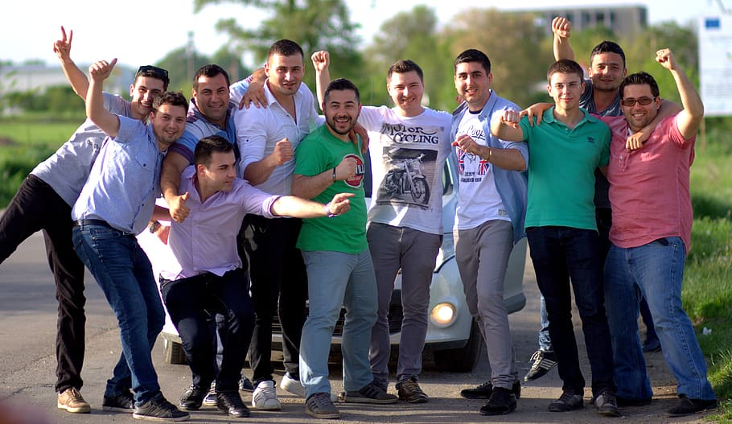

La primer ROTISERIA DE HAMBURGUESAS de Rosario
¿Quienes somos?
La marca fue formada por un grupo de diez amigos fanáticos de las hamburguesas. Empezaron cocinando en un quincho y, en tan solo pocos meses, consiguieron abrir su propio local en la zona céntrica de la ciudad, donde ya funcionan bajo la modalidad de delivery y take away.
El proyecto nació hace menos de cinco meses. “A todos nos encantan las hamburguesas y mas si son ahumadas, por eso siempre que nos juntabamos a comer o pedimos solo hamburguesas pero sin conseguir ese sabor a parrilla. Un día, estábamos en una casa, y ahí surgió la idea de empezar con este proyecto. Empezamos a buscar proveedores de carne, panes, packaging, hasta que en julio arrancamos”, señaló a InfoFunes Agustin Giustetto, uno de los titulares de la firma.
Nuestra historia
Así, SMOKED BURGUERS se puso en marcha haciendo promociones en sus redes sociales, donde ofrecía sus productos mediante el servicio de delivery, ya que, al no contar con un local propio, las hamburguesas se cocinaban en el quincho de uno de los dueños.
Rápidamente, empezaron a tener numerosas ventas y forjaron sus primeros clientes, a tal punto que lograron a finales de octubre abrir su establecimiento en calle Moreno XXX, entre XXX y XXX, donde antes funcionaba la rotisería “Doña Tita”.